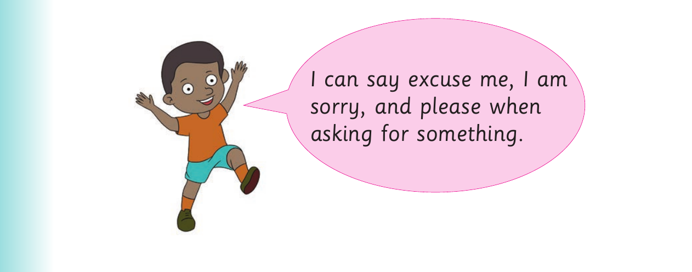

I make polite requests
I make polite requests.

I can say excuse me, I am sorry, and please when asking for something.
Activity 1
1. Act out the following conversations:
(a) In the classroom Conversation 1
John : Excuse me Asha, can I borrow your pen?